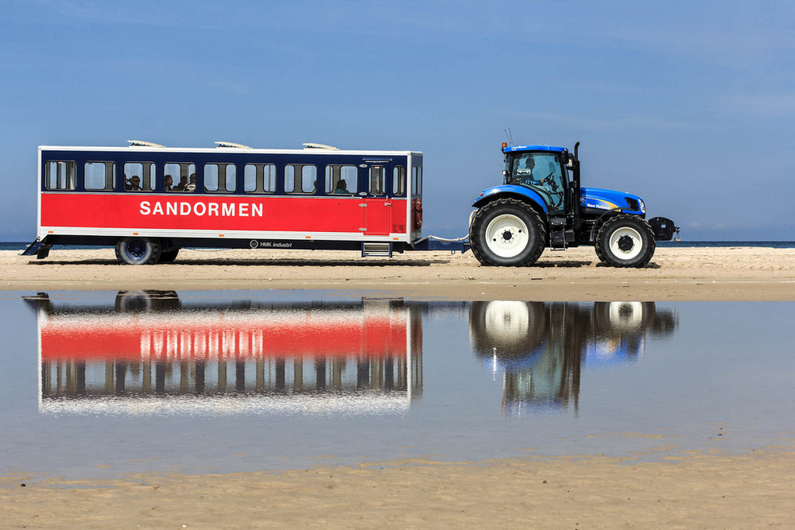
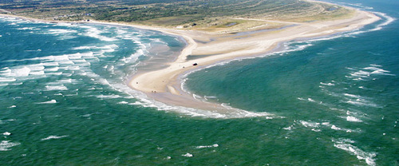
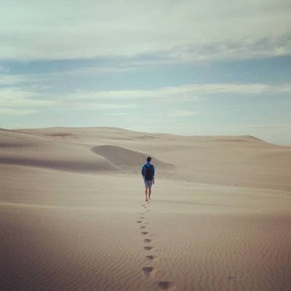
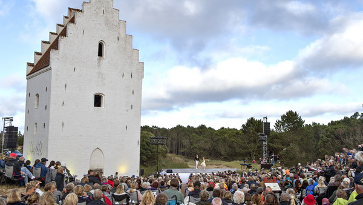

Visit Grenen
Interesting places in Denmarkby Petr Mrkvicka | Oct 7, 2017
What is so interesting about Grenen? Maybe the fact that this is the place where two seas are "meeting" and you can see it with naked eye! Here you can also enjoy a bit of desert in Denmark!
Maybe you've heard about this place. Grenen, what it just reminds me of? Oh yes! It's meant to be the northest point of Denmark. Maybe you can argument - what about Faroe Islands or Greenland? Well, here I need to change my testimony: Grenen is meant to be the northest point of Jutland.
What is so interesting about it when every country has its own most northern point? You can go to the water and suddenly, you stand in Skattegat (which are waters between Denmark and Sweden) with one of your leg and the second one stands in Skagerrak (which is part of North Sea). This is pretty cool, what else?
I was pulling your leg a bit when I said it's the most northern point of Jutland. Sorry for that. In fact, the most northern point is situated approx. 2,5km to the west since the sandy spit curves itself in this point and is facing east.
The spit is approx. 30km long now and is considered the longest spit in the world. Every year, thanks to the sand carried from the sea, the spit enlarges itself by 10m! Believe it or not, there can be a natural bridge between Denmark and Sweden (if the Earth will survive).
Desert
Not only the location nor the two-sea cool place is very decent about Grenen. I am talking about the sand dunes which you can find in the neighborhood. Imagine yourself standing in desert but with the feeling of a typical Danish weather. Pretty weird, isn't it? For me, it was a nice feeling, we had a very nice weather and it sets you apart of the stereotypical grey weather in here.
Skagen
Worth a mention is also a near village Skagen, which you will surely pass! During the season, you can get transport from Skagen to Grenen with a cute little tractor called Sandormen (mind that only cash is allowed here) which is up and running more than 50 years. In Skagen, you can visit a beautiful town, its sights and a Skagens Odde Naturcenter.
Den Tilsandede Kirke
Den Tilsandede Kirke means The Sandburied Church which you can find near Skagen. It's now covered in sand, but this church was probably built in 14/15th century. About this one in one of our next article about interesting places in Denmark!
How to get here
The easiest way to get here is by car, of course, which you can park in Skagen. I bet you'll find the parking lot! You can get here by bus or by train, obviously. Skagen is the terminating station so you won't get lost! Easy, right?
That's it. If you are feeling bored any weekend, here you have tip on what to do! But hurry, the Sandormen stops its journey by the end of the week 43!
See you next time in our section about Interesting places!
Next article in a row: is getting ready for you!